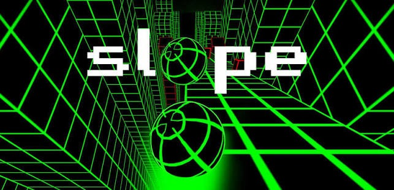

Slope Unblocked

Slope is a fast, addictive 3D running game where you control a rolling ball racing down a steep neon track. Move left and right to dodge red obstacles, avoid gaps, and survive as long as possible. The longer you last, the faster the ball moves, making every second more intense. Slope is simple to learn but hard to master, so it’s perfect for quick breaks or beating your own high score. Play Slope free in your browser with no download or sign-up required. It runs smoothly on desktop, tablet, and mobile. Ready to test your reflexes? Press PLAY, start rolling!
PLAY